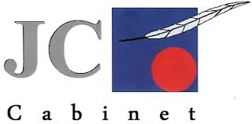

Stage

Presentation de l'entreprise :
JC-Cabinet est une petite entreprise composée de deux employés : Jean Jérôme, le dirigeant de l'entreprise, et Marie, la secrétaire.
JC-Cabinet est une société d'assistance informatique destinée aux petites et moyennes entreprises.
Mes differentes taches :
Ma tache principale était une formation sur le langage python sur le site Elephorm
J'ai egalement participer a des missions en entreprise plus axée sur le systèmes et réseaux
Conclusion du stage :
| Pour | Contre |
|---|---|
| Amélioration de ma capacité à être indépendant | J'ai fait la même formation trois fois |
| Amélioration de mes compétences en Python | Ce n'était pas une entreprise de développement |
| Une grande partie du stage s'est faite en télétravail |